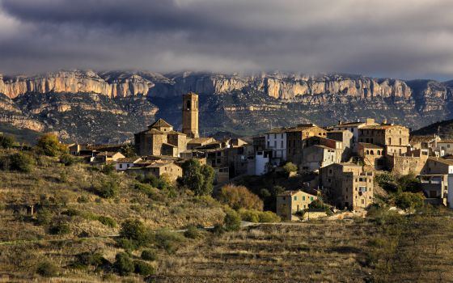

Al PECT-Priorat treballem per dinamitzar i mantenir vius els valors culturals i naturals d'aquesta comarca meridional sud de Catalunya.
Consulta l'apartat 'El projecte' per assabentar-te sobre els nostres objectius, operacions i notícies més recents.

Compartim objectius amb la gent del territori donant continuitat a terres sense propietari, assegurant el paisatge i patrimoni tradicional tot dinamitzant activitats del sector
Fes una ullada al 'Vissor de Terres' on hi trobaras terrenys i finques cedides per a que puguis començar la teva vida al camp